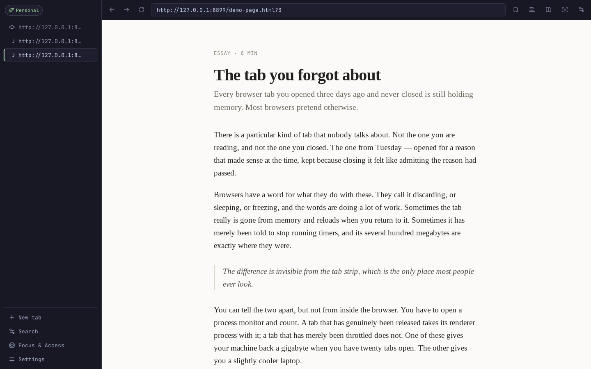
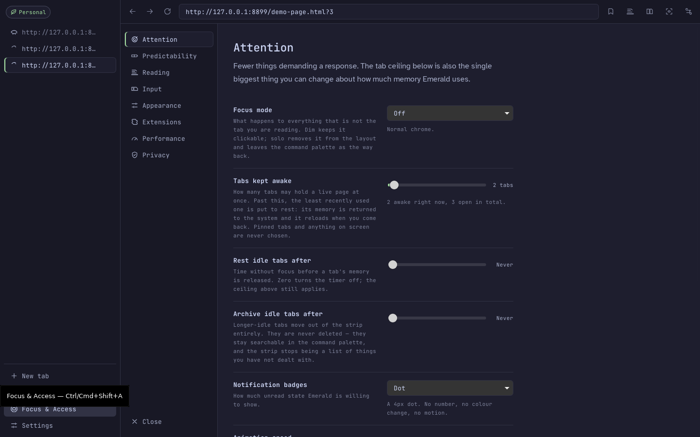
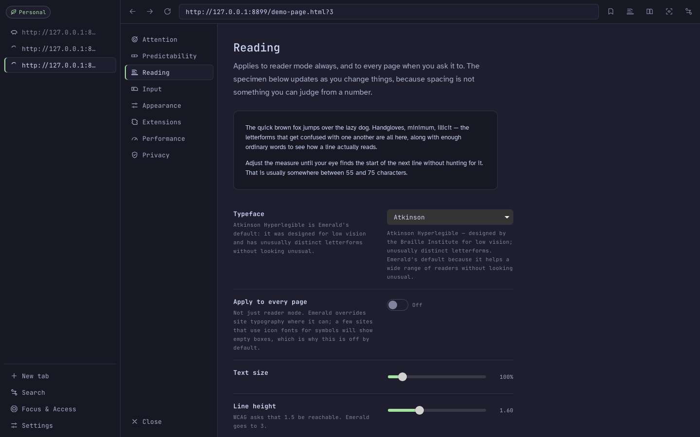
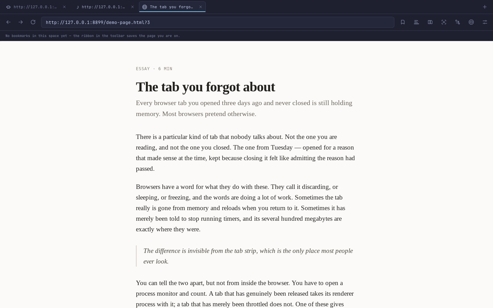

Desktop browser · Linux, macOS, Windows
A browser that gets
out of the way, and
gives the memory back.
Emerald ships no rendering engine of its own — it borrows the one already sitting in your operating system. Tabs you stop using have their processes terminated and their memory returned, not merely greyed out. The accessibility settings are the product rather than a panel you have to go looking for.
Free, MPL-2.0, no account. The builds are unsigned, so macOS and Windows will both warn you on first launch — what to click.

01
Suspension that actually frees memory
Most browsers "suspend" a tab by leaving the process alive and hoping the allocator gives something back. Emerald destroys the webview. The operating system reclaims the pages, and you can watch the process count drop while it happens.
The ceiling is a number you set. Past it, the least recently used tab that is not pinned and not on screen goes to rest. Tabs on screen are never chosen — a policy with 13 tests behind it, including one named after the mistake it prevents.
- Binary, Linux x86-64
- 7.2 MB
- Chrome window, one tab
- 11 processes
- Emerald, same page
- 5 processes
- Cold start to painted chrome
- 1.28 s
Measured on one machine, under Xvfb with software rendering, by a script in the repository. Reproducible, not universal — and the per-tab marginal cost is worse than Chromium's, which is written down in the benchmarks rather than left out of them.
02
Focus & Access is not a checkbox page
69 settings across attention, predictability, reading and input. Every one of them says what it costs you as well as what it does, because a setting that hides its downside gets switched on and then blamed. Two clicks from anywhere, or Ctrl+Shift+A.


- Nothing flashes. No element in Emerald blinks, pulses or breathes, in any theme, at any animation speed, for any notification. It is enforced in one CSS line, not requested in a style guide.
- Nothing autoplays. The guard patches the media prototype before page scripts run, so a site cannot beat it to the punch.
- Nothing you type is lost. Text fields are saved locally as you go, and a recovered draft is offered back after a crash or a misclick. Password and payment fields are excluded by a deliberately broad rule.
- Motion has an off switch that means off. Not "reduced" — zero, with transitions becoming instant rather than removed, so nothing jumps.
03
The engine, stated before you ask
Emerald is a Rust shell around whatever web engine your system already has. That is the whole reason the download is single-digit megabytes and there is no updater service, no crash reporter and no field-trial client running behind it — none of that was ever linked in.
It also means one honest gap, which belongs here rather than in a footnote: on Windows, Emerald renders with Chromium. Tauri has no non-Chromium Windows backend and neither does anything else that ships today.
| Platform | Engine | Chromium? |
|---|---|---|
| Linux | WebKitGTK | No |
| macOS | WKWebView | No |
| Windows | WebView2 | Yes |
04
Or make it look like the browser you already use
The vertical sidebar is the default because a horizontal strip degrades into a row of indistinguishable favicons. But "looks like the thing I already know" is a real accessibility property, so the Chrome-shaped layout is one click away and nothing is hidden behind it.

05
What is wrong with it
Every project's site has a features list. This is the other one. None of these are secrets — they are in §9 of the architecture notes too, and they are here at the same size as everything above.
- Windows means Chromium. The one platform where most people are is the one where the engine argument does not hold.
- Per-tab memory is worse than Chromium's. Emerald wins on the floor and on what it releases, not on the marginal tab.
- No dictation on Linux. WebKitGTK ships no speech recognition, and Emerald contains no speech model, so the button says so instead of pretending.
- Extensions run on Windows only. WKWebView and WebKitGTK have nothing to run them with. That is the engine decision showing its price.
- Reading fonts reach web pages on the
.deband a dev checkout only. The other packages install no system fonts, so on those the dyslexia face restyles Emerald's own interface but not the page. - Four settings are stored and shown but not yet wired to anything the engine does. They are listed as such rather than quietly doing nothing.
- It is version 0.1.1. A working skeleton with real tests, not a browser to move your life into yet.
06
Take a copy
Emerald checks GitHub once per window for a newer release and offers to fetch the installer. It never replaces itself while running, and the check is one switch in Settings → Privacy away from off — after which it contacts nothing you did not ask it to.